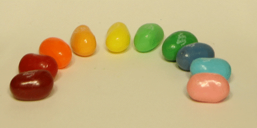
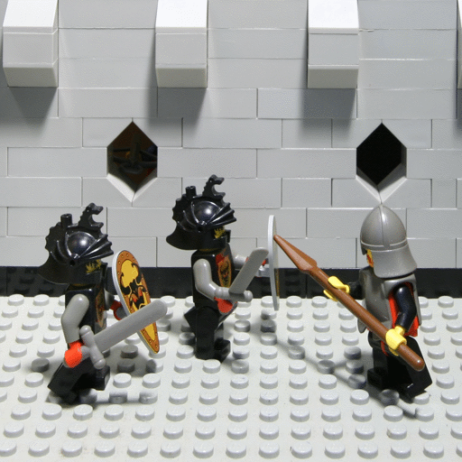
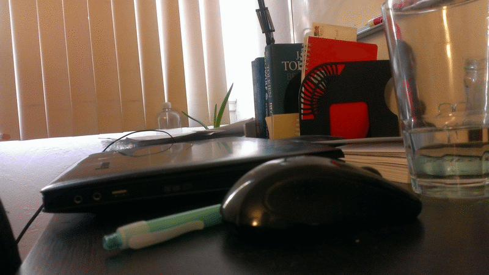

Part 1 : Refocusing
We work with a pre-supplied light field dataset, supplied at this link. Each light field consists of a grid of 17x17 uniformly spaced images, and in each set they share a common focal plane. This is done with a camera array (which is not feasible to build for the purposes of this class).
Working with a light field allows us to do a variety of tricks that would not be otherwise possible given a single image without near full reconstruction of the scene representation. Here we explore changing the apeture size of the camera, and changing the focal plane of the picture.
How do we change the focal plane? Let's first assume we work with the largest apeture possible; in this case, we work with all the images in the dataset. If we average all of the images together naively, we should focus on the shared focal plane between all the images. This is conveniently possible because in the dataset we're working with, the cameras are coplanar and aligned to point at the same focal plane.
In order to refocus at different depths, we just need to shift the images such that the rays captured at that depth are aligned. This will naturally jitter the rays that do not converge to the depth we want. The way this is implemented is fairly simple. For each image that is not the mean image, shift it toward the mean image by some offset; varying the offset will allow you to change the focal plane. A positive offset will bring the focal plane closer to the camera; a negative offset
will move the focal plane away from the camera.
Result
Description
The chessboard is naturally suited for refocusing. The different levels of focus are very apparent. The initial focal plane seems to be near infinity for this one.
An example of jelly beans laid out. The initial focal plane is at the front of the jelly beans, so bringing the focus closer to the camera puts everything out of focus.
An example of the lego-knights; the initial focal plane was around their feet..
Part 2 : Apeture Change
Assuming that each of our pictures is taken by a pinhole camera, we can simulate various apeture sizes by changing the window over which we average by; for example, if we use a 1x1 grid that's just a pinhole camera; if we use a 3x3 grid then we have an apeture size equivalent to the physical size of the grid, and so on.
Result
Description

An example of changing the apeture sizes for the beans. Note how the focused area grows larger and smaller with smaller and larger apetures respectively.

An example of changing apetures on the legopeople.
Bells & Whistles : Interactive Refocusing
I implemented interactive refocusing. Initially I tried feature extraction and matching, but it didn't work very well for "far-away" images; if there was a significant difference between two images in the grid, it would fail to align the images.
Using SSD on the local patch around a selected point worked fairly well, however some images did not align properly so there was still some blurring. So I fixed it by doing a precompute pass over most focal alignments, and selecting the correct focal alignment corresponding to the given input point. Below I have included a demonstration video.
Bells & Whistles : Own Pictures
Images
Description
Here is the original image I worked with; there's a fair amount of depth in this picture of my roommate's desk. I took a 5x5 grid of images by stabilizing my hand on a flat object and adjusting the height of the object.
Here I attempt to adjust to focal plane. The first thing to immediately note is the alignment errors. There's just too much human error from holding a camera shakily. However, the effect of focusing the laptop can still be faintly seen. An additional problem was that the focal plane was not well defined in between pictures; thus when we take the full average everything is blurry.

Here I try adjusting the "apeture" of the camera, which just is an increase in blur, effectively.
What I learned
While light fields are powerful, they pose a significant challenge to work with; a large amount of information about camera location and orientation is needed previously to reconstruct a working light field and do operations on it. Additionally, these values and the pictures need to be very precise. It would be interesting to explore inprecise ways of approximating a light field for a final project.